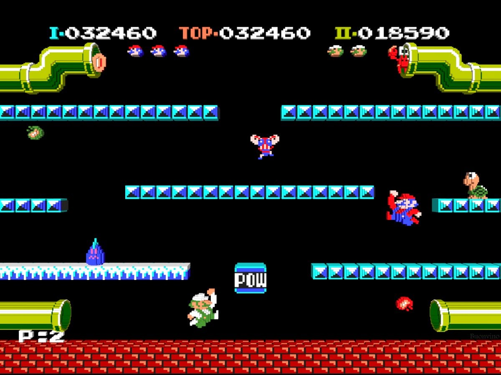

Los juegos de plataformas, también conocidos como "Platformers", son un género de videojuegos donde el objetivo principal es que el personaje del jugador se mueva saltando y/o trepando entre plataformas suspendidas mientras evade obstáculos.
CARACTERÍSTICAS:
La jugabilidad se centra en maniobrar un personaje a través de una serie de plataformas, saltando para evitar caídas, generalmente en un entorno 2D.
Suelen incluir una variedad de obstáculos a superar y enemigos a enfrentar, lo que requiere destreza y precisión por parte del jugador.
Están divididos en niveles o etapas que el jugador debe completar para progresar, con dificultad creciente.
Incluyen objetos coleccionables y recompensas que el jugador debe recoger para ganar puntos o desbloquear habilidades y niveles especiales.

SUBGÉNEROS:
Plataformas básicos: Juegos con plataformas sin desplazamiento de pantalla, como el Donkey Kong o el Mario Bros original.
Plataformas de exploración: Tienen escenarios más grandes que se recorren varias veces en diferentes direcciones, con evolución continua de habilidades y argumento más desarrollado, como las sagas Castlevania, Tomb Raider y Metroid.
Plataformas en 2.5D: Juegos en 2D con componentes o técnicas 3D que permiten efectos especiales y girar el escenario, como Strider 2 o New Super Mario Bros.